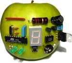

 CrossPack for AVR Development 20131205 |
DocumentationThe various packages contained in CrossPack for AVR Development come with different forms of documentation. Some have HTML documentation, some have Unix man pages and some have GNU Info files.This section is a starting point for all documentation resources. Unfortunately, we can't link Unix man pages and GNU Info files into this HTML page. You must type the appropriate commands yourself. Documentation Available in HTML FormatAVR Libc - a C library for GCC on AVR microcontrollersAVRDUDE - AVR Downloader/Uploader Documentation Available as Unix Man PagesCrossPack for AVR Development includes the command avr-man to ensure that AVR specific manual pages are printed. Example:Shell Session: bash$ avr-man strcpy
<string.h>: Strings(3) avr-libc <string.h>: Strings(3)
NAME
<string.h>: Strings -
Detailed Description
#include <string.h>
The string functions perform string operations on NULL terminated
strings.
...
Documents in Section 3acks: Acknowledgmentsalloca: <alloca.h>: Allocate space in the stack asmdemo assembler: avr-libc and assembler programs assert.h atomic.h avr_assert: <assert.h>: Diagnostics avr_boot: <avr/boot.h>: Bootloader Support Utilities avr_cpufunc: <avr/cpufunc.h>: Special AVR CPU functions avr_eeprom: <avr/eeprom.h>: EEPROM handling avr_errno: <errno.h>: System Errors avr_fuse: <avr/fuse.h>: Fuse Support - fP avr_interrupts: <avr/interrupt.h>: Interrupts avr_inttypes: <inttypes.h>: Integer Type conversions avr_io: <avr/io.h>: AVR device-specific IO definitions avr_lock: <avr/lock.h>: Lockbit Support - fP avr_math: <math.h>: Mathematics avr_pgmspace: <avr/pgmspace.h>: Program Space Utilities avr_power: <avr/power.h>: Power Reduction Management avr_sfr: <avr/sfr_defs.h>: Special function registers avr_sfr_notes avr_signature: <avr/signature.h>: Signature Support - fP avr_sleep: <avr/sleep.h>: Power Management and Sleep Modes avr_stdint: <stdint.h>: Standard Integer Types avr_stdio: <stdio.h>: Standard IO facilities avr_stdlib: <stdlib.h>: General utilities avr_string: <string.h>: Strings avr_version: <avr/version.h>: avr-libc version macros avr_watchdog: <avr/wdt.h>: Watchdog timer handling benchmarks: Benchmarks boot.h compat_ina90: <compat/ina90.h>: Compatibility with IAR EWB 3.x cpufunc.h crc16.h ctype: <ctype.h>: Character Operations ctype.h delay.h delay_basic.h demo_project demos: Demo projects deprecated: Deprecated List deprecated_items: <compat/deprecated.h>: Deprecated items div_t errno.h fdevopen.c fuse.h inline_asm: Inline Assembler Cookbook install_tools: Building and Installing the GNU Tool Chain interrupt.h inttypes.h largedemo ldiv_t library: How to Build a Library lock.h malloc: Memory Areas and Using () math.h mem_sections: Memory Sections optimization: Compiler optimization overview: Toolchain Overview parity.h pgmspace: Data in Program Space pgmspace.h porting: Porting From IAR to AVR GCC power.h release_method: Release Numbering and Methodology setbaud.h setjmp: <setjmp.h>: Non-local goto setjmp.h sleep.h stdint.h stdio.h stdiodemo stdlib.h strdup.c string.h strtok.c strtok_P.c todo: Todo List twi_demo using_avrprog: Using the avrdude program using_tools: Using the GNU tools util_atomic: <util/atomic.h> Atomically and Non-Atomically Executed Code Blocks util_crc: <util/crc16.h>: CRC Computations util_delay: <util/delay.h>: Convenience functions for busy-wait delay loops util_delay_basic: <util/delay_basic.h>: Basic busy-wait delay loops util_parity: <util/parity.h>: Parity bit generation util_setbaud: <util/setbaud.h>: Helper macros for baud rate calculations util_twi: <util/twi.h>: TWI bit mask definitions util_twi.h: twi.h wdt.h Documentation Available as GNU Info PagesCrossPack for AVR Development includes the command avr-info to ensure that AVR specific info pages are printed. Example:Shell Session: bash$ avr-info binutils
File: binutils.info, Node: Top, Next: ar, Up: (dir)
Introduction
************
This brief manual contains documentation for the GNU binary utilities
(GNU Binutils) version 2.17.90:
...
List of Info Documentsannotateas bfd binutils configure cpp cppinternals gcc gccinstall gccint gdb gdbint gprof ld libquadmath make stabs standards AVR Libc ExamplesAVR Libc comes with a set of example projects. These can be viewed here. |